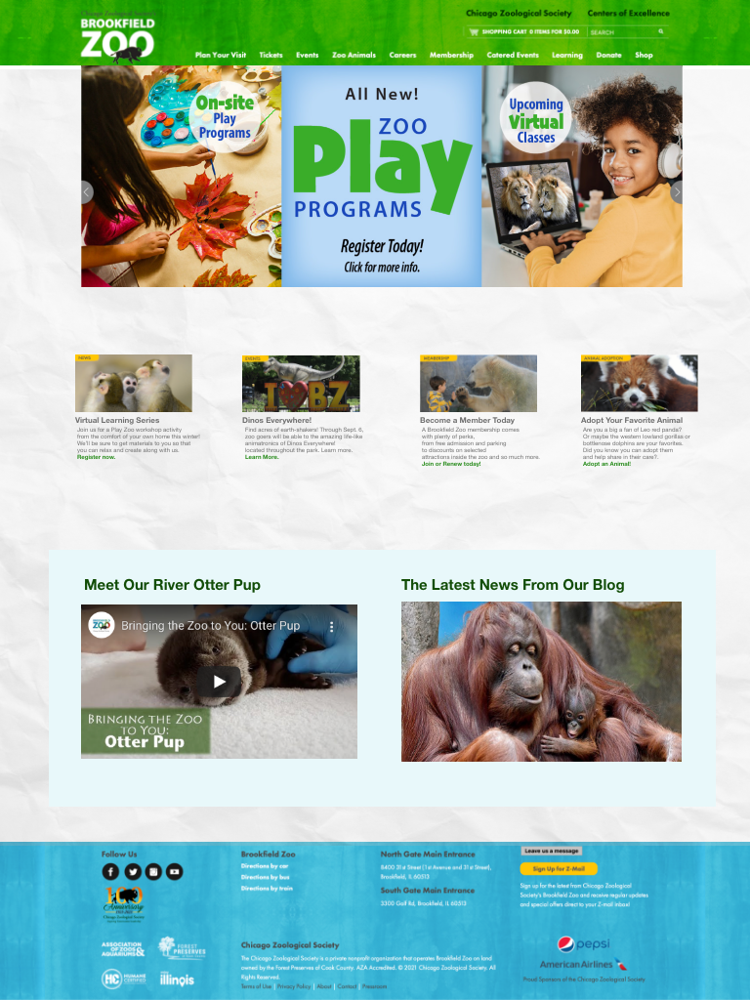

Lab 2: Sitemap/XD
Brookfield Zoo Wireframe

Usability:
- There is a lot of HTTP requests. An HTTP stands for Hypertext Transfer Protocol. It requests the server to grab the webpage. If there are too many requests, then the render is slowed down. Therefore, lowering the number of http requests would be beneficial for a better rendering experience. To do that you have to also lower the amount of items on a page.
- Additionally, there are a lot of large images within the page that cause the issue of a delayed loading time. If the images were minimized then everything would run more smooth. There are also a lot of options in the pull down menu that may cause the rendering to slow down as well, therefore lower the options to 3 or 4 instead of 6 or 7.
Accessibility:
- I used Wave to help know details of what needs to be upgraded within the accessibility of this site. Firstly, there are a lot of redundant links which means it all goes to the same URL. This ends up producing additional navigation and repetition for keyboard and screen reader users. Instead, they should have combined all the redundant links into one link and remove all of the faulty texts and alternatives.
- Secondly, there is an embedded Youtube link, however it is lacking a caption option. When you have video content with audio it is important to have synchronized captioning available.